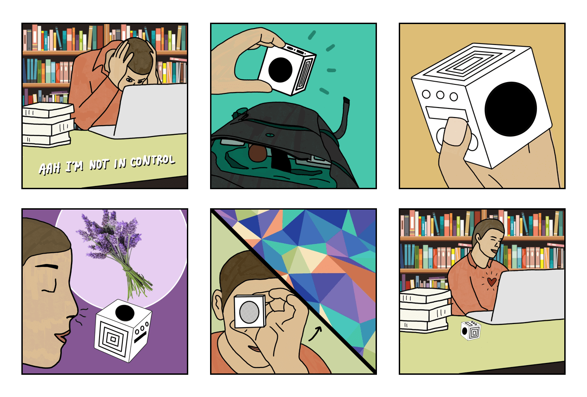
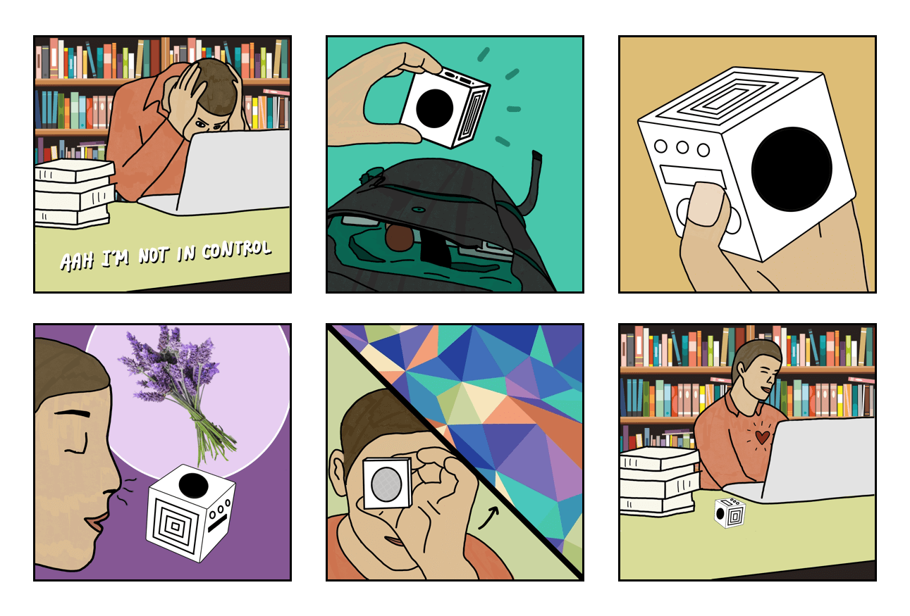

Reflection
This was a challenging, yet rewarding experience that taught me a lot
about designing for a product with multimodal touchpoints and working
closely with sensitive populations.
The importance of sensitive design
Mental health comes with a lot of stigma, trauma, and characteristics
that vary from person to person. We kept this in mind throughout our
process, from problem definition to the final design response. I
discovered that co-design is a particularly powerful method to connect
with your audience's needs. In participant research, it was important
to craft questions and activities carefully and get feedback on them
to ensure they weren't potentially triggering or uncomfortable. In our
design, we wanted to counter traditional cold, detached mental health
tools by making ours feel warm, approachable, and accepting.
Working across physical and digital mediums
This was one of the first times I designed for a physical product,
which meant there were a lot of opportunities for personal learning
throughout this process. Everywhere we looked, there were constraints
with regards to material, durability, and costs. I learned that rapid
prototyping with recycled materials is a great way to test out ideas
quickly and inexpensively. Additionally, with three different touch
points of our product (the physical bottle, the website, and the
packaging), it was a challenge to make the overall user experience
feel seamless throughout. However, thoughtful branding and a unified
design language helped in creating a more connected experience.


 
